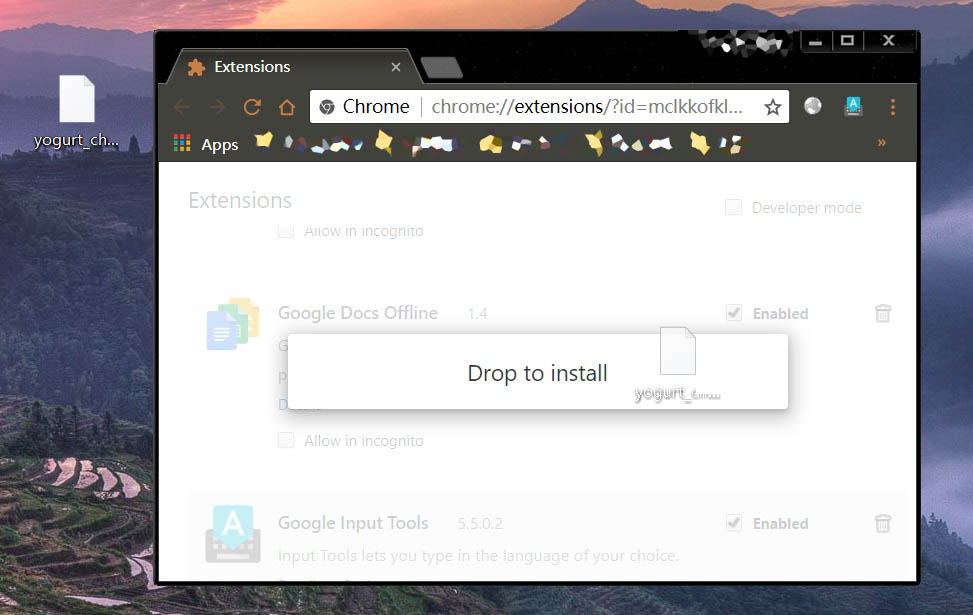

Yogurt Installation
Installation
Step 1, get the package [ ]
]
Chrome App Store
The Chrome app market is no longer accepting new apps since November 2016.
Direct link to binaries
Please save this link from the github depository
Cloud Storage
Baidu Yun http://pan.baidu.com/s/1dF3Uc8L PWD: q9f1
Google Drive Yogurt_chrome_app.crx
GitHub Source Code is here
Step 2, add me to chrome extension []
Put "yogurt_chrome_app.crx" to desktop and open below link in your Chrome browser
chrome://extensions/

Drag "yogurt_chrome_app.crx" to your Chrome browser

Click Add Extension

In the popup windows find "Yogurt Net Downloader"
Then you can find me here Chrome on the top left corner of your Chrome browser
Or you may sent a shortcut to your desktop by left click on my icon

Previous
Next
Possible Questions FAQ page
Email yogurtNetDL@gmail.com